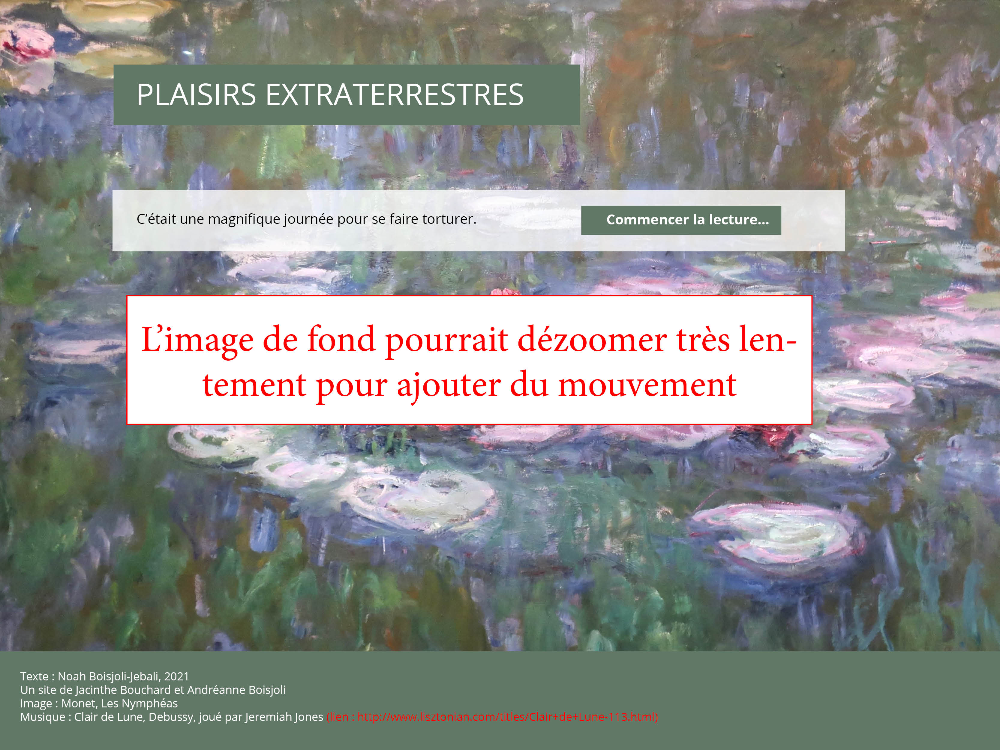
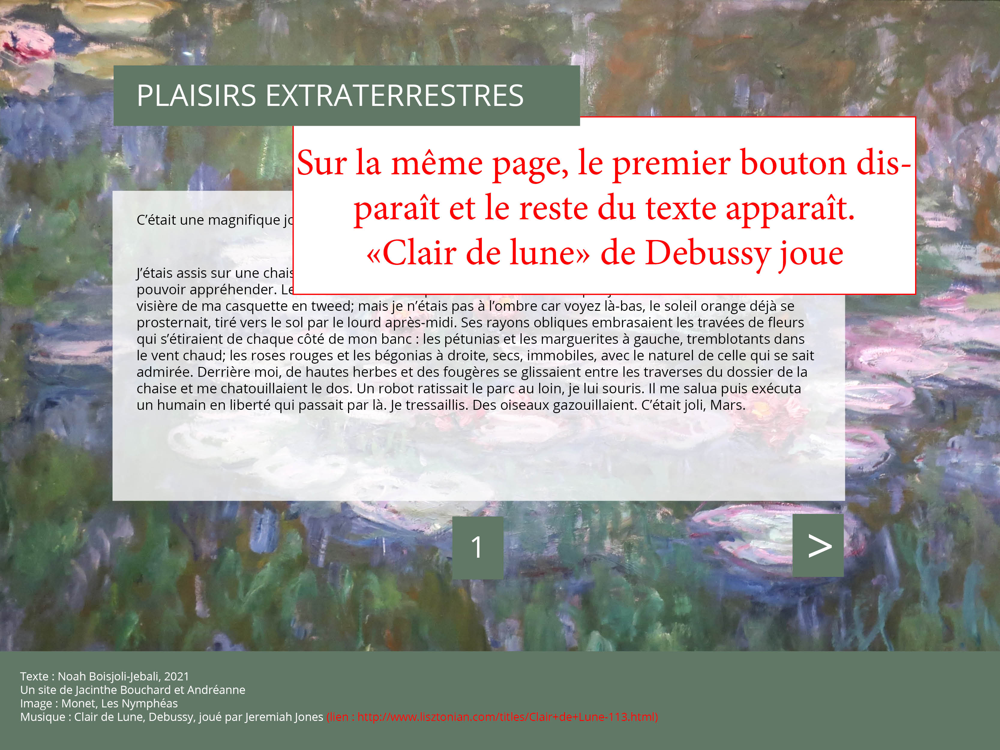
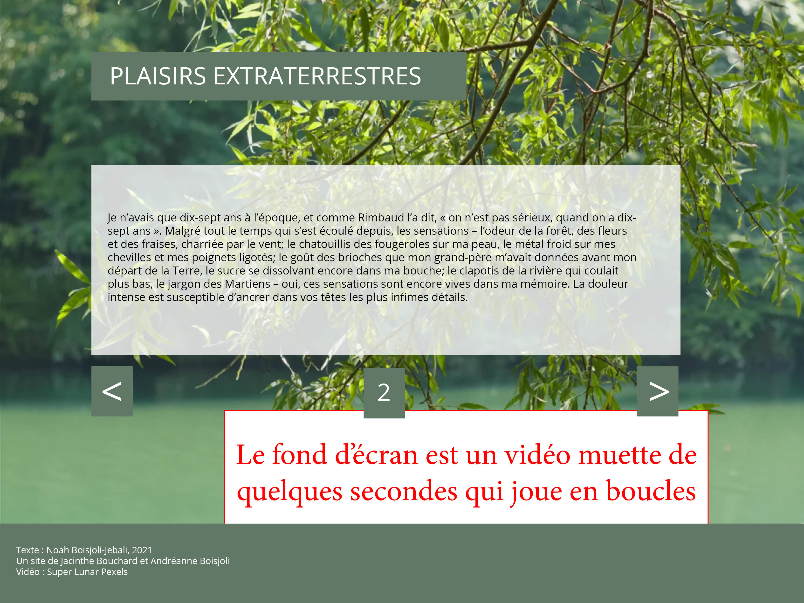
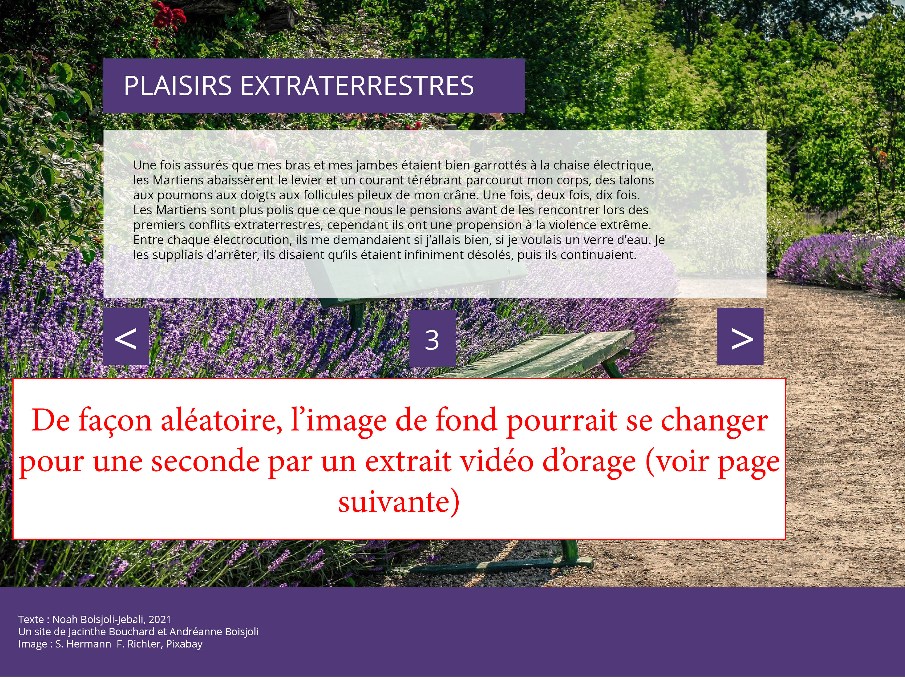
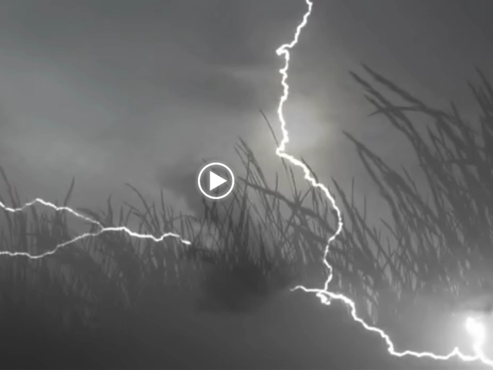
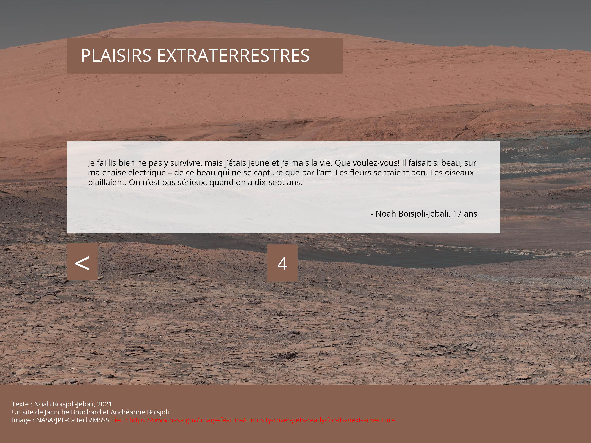

Description du projet
Nous proposons d'illustrer une courte nouvelle rédigée par un jeune auteur à travers un petit site web de 3 ou 4 pages. Au bas de chaque page, on trouvera des flèches qui cachent des liens permettant de se rendre à la page suivante ou à la page précédente, ainsi qu’une indication concernant la page où on se trouve. La première page du site fera exception, avec un bouton qui servira plutôt à ajouter du texte sur la page en cours. Le site web contiendra des images, de la musique et des animations simples. Les principaux défis technologiques que nous aurons à relever seront de créer une feuille de style qui permettra de transmettre la vision du projet que nous avons présentée sur la maquette et de mettre en place des animations javascript simples qui seront fonctionelles.
Survol des techniques
- Site web bâti à l’aide de Github pages à partir de fichiers HTML, CSS et JS;
- Animations simples avec Javascript : à l'ouverture de la page ou au clic -addition de texte sur une page, arrière-plan clignotant;
- Addition de musique avec Javascript (sur un clic ou automatiquement);
- Lecture de vidéos avec Javascript (sur un clic ou automatiquement);
Maquette
Notre maquette a été créée à l’aide d’InDesign. Les images et les captures de vidéos qui s’y trouvent sont libres de droits et représentent bien le type d’image et de vidéos que nous souhaitons ajouter à notre projet.





